PCalen
概要
いわゆる万年カレンダーです。 万年カレンダーは至る所にあります。 例えば、Windowsならばタスクバーの時刻をクリックすれば現れます。 私がほしかったのは、祝祭日のついたカレンダーです。 来年とか、再来年に旅行の計画を立てるとき、 祝祭日が分かれば便利だろうなと思って作成しました。 (ダウンロードはこのページの下の方でできます。WindowsPC専用です｡)
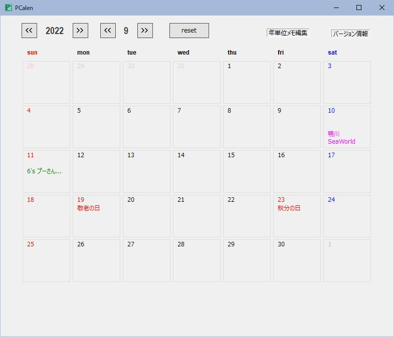
機能
- 過去、現在、未来のカレンダーが祝祭日を含めて表示されます。※1、※2
- 日付毎にメモ書きの機能があります。
- 個人的に毎年表示したいメモ：
家族の誕生日や結婚記念日など 何年目かも表示されます - 覚え書きのメモ：
普通に書き込みができるカレンダーで書き込みする感覚のメモです。
xx提出期限、xx待ち合わせ...など以外に、 その日に起きて、メモしておきたいことを書き込むことで、
後日、｢あのとき、こんなことがあったんだ！｣と、記憶を呼び覚ますメモにもなります。
- 個人的に毎年表示したいメモ：
インストール
PCalen.zipを解凍します。
解凍すると｢PCalen｣フォルダーが現れます。
｢PCalen｣に、必要なデータ一式が格納されています。
適当な場所に、｢PCalen｣フォルダーを移動して下さい。
アンインストール
｢PCalen｣フォルダーを削除して下さい。
全てのデータが削除されます。
registryには一切手を加えていませんので、
これで、削除完了です。
起動
｢PCalen｣フォルダー内のPCalen(拡張子が表示されている場合はPCalen.exe)をダブルクリックして下さい。
PCalenが起動します。
取り扱い方
-
表示年月の切り替え
PCalenが起動すると現在の年・月のカレンダーが表示されます。
当日の日付の背景が周囲よりも若干濃いグレーで表示されます。
ウインドウ上部に、年・月が表示されています。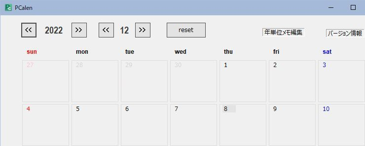
※今日の日付(この画像をキャプチャーした日付)は2022年12月8日です。
- それぞれ｢年｣、｢月｣の左右のボタンをクリックすると、表示年・表示月が切り替わります。
resetボタンを押下すると現在の年・月に戻ります。 - 直接、表示させたい年・月を入力して
Enterキーを押すことで切り替えることもできます。
※2019年9月に台風15号が房総を直撃したときのメモが記録として残っていました。
- それぞれ｢年｣、｢月｣の左右のボタンをクリックすると、表示年・表示月が切り替わります。
-
年単位メモの編集
ウインドウ右上の｢年単位メモ編集｣をクリックすると｢年単位メモ｣画面が開きます。
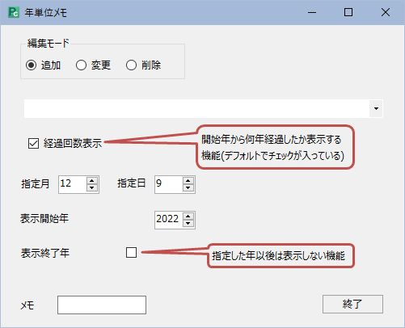
※今日の日付(この画像をキャプチャーした日付)は2022年12月9日です。
-
追加：年単位メモの追加(デフォルトで選択状態)
-
月・日・表示開始年を指定します。
[▲] [▼]キーをクリックして目的の年・月・日を指定するか、
直接、年・月を入力してEnterキーを押すことで指定します。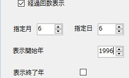
例として誕生日の日付を
指定してみます。 -
入力欄にメモを入力します。
入力後、Enterキーを押すと｢更新｣、｢キャンセル｣ボタンが現れます。
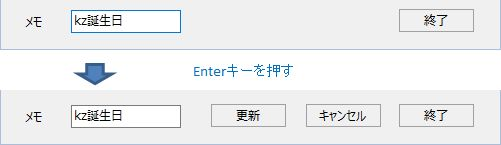
-
更新ボタンを押す。
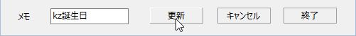
編集したメモが追加された後、初期のウインドウに戻ります。
続けてメモを追加することができます。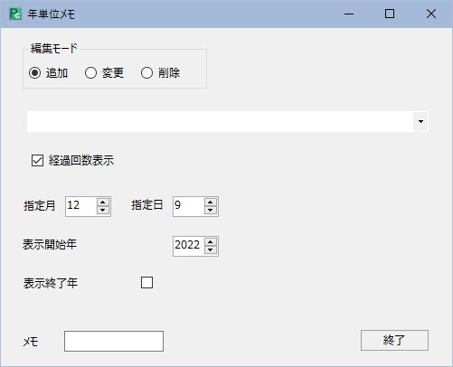
※｢キャンセル｣ボタンを押した場合も初期のウインドウに戻りますが、
編集したメモは追加されません。 -
終了ボタンを押す。
年単位メモのウインドウが閉じます。
-
確認。
6月を表示してみます。6日にメモが追加されています。26歳の誕生日です。
1996年まで6月を表示すると、メモが表示されます。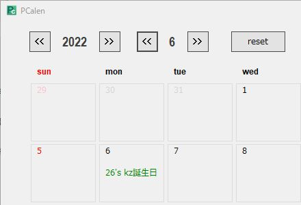
-
-
変更：登録されている年単位メモの内容を変更
-
変更を選択すると編集モードの選択とプルダウンメニュー、｢終了ボタン｣以外は使用できなくなります。
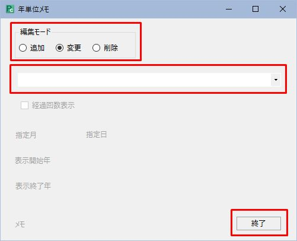
メニュー右の｢▼｣をクリックすると、登録されている年単位メモのリストが表示されます。
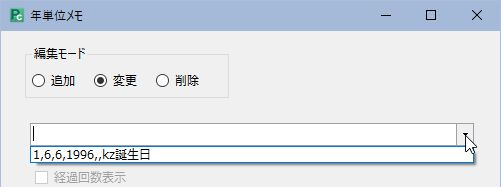
まだ1つしか登録されていませんが、年単位メモを沢山追加すれば、登録されているメモが全て表示されます｡
目的のメモをクリックすると、登録した内容が表示されます。
赤枠の中が編集対象です。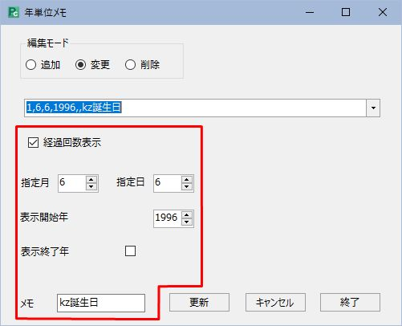
-
編集後の操作(更新/キャンセル->終了)は追加のときと同じです。
-
-
削除：登録されている年単位メモを削除
-
削除を選択すると編集モードの選択とプルダウンメニュー、｢終了ボタン｣以外は使用できなくなります。
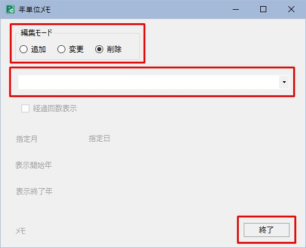
メニュー右の｢▼｣をクリックすると、登録されている年単位メモのリストが表示されます。
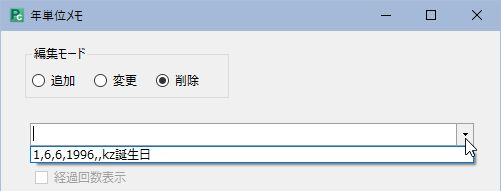
目的のメモをクリックすると、｢更新｣、｢キャンセル｣ボタンが現れます。
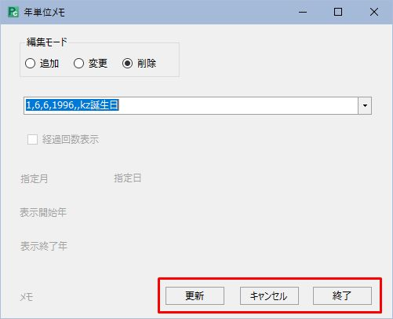
-
｢更新｣ボタンを押すと対象のメモが削除され、初期のウインドウに戻ります。
※削除されたデータは元に戻りませんので、慎重に操作して下さい。
-
｢キャンセル｣ボタンを押すと対象のメモが削除されずに、初期のウインドウに戻ります。
-
｢終了｣ボタンを押すと、年単位メモのウインドウが閉じます。
-
-
-
(簡易)メモの編集
ウインドウ右上の｢年単位メモ編集｣をクリックすると｢年単位メモ｣画面が開きます。
-
入力
日付が表示されている枠内の下の方にカーソルを合わせると、背景が白く変化します。
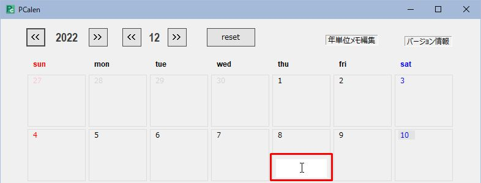
この状態でマウスを左クリックすると、文字の入力が可能になります。
入力後にEnterキーを押すことで入力完了となり、背景が白から元のライトグレーに戻ります。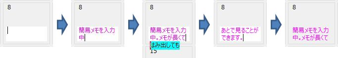
上の図を見ると途中で入力範囲をはみ出して、メモを書き続けています。
入力完了後は入力範囲からはみ出したメモは表示されていません。
しかし、メモにマウスカーソルを合わせると入力したメモ全体が表示されます。※年単位メモでも同様です。
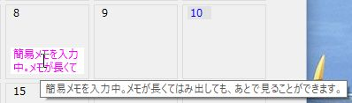
-
編集(修正、削除)
メモにマウスのカーソルを会わせると背景が白に変化するので左クリックします。
編集可能になりますので、メモの修正・削除を行ってEnterキーを押して下さい。修正の場合は、修正した日付のメモが反映されます。
削除の場合は、削除した日付のメモが表示されなくなります。
-
ダウンロード
フリーウェアです。
補足
※1
万年といっても限りがあります。一応、1902年～2076年まで表示できますが、
未来に関しては、2070年位までしか当てになりません。
理由は春・秋分の日の精度のためです。
春・秋分の日の計算は、以下の諸量から簡易計算しています。
① 起点となる年(1900年と1988年)の太陽の春分点通過日
② 1年ごとの春分点通過日の移動量
③ 閏年によるリセット量
この簡易計算は90年弱で計算が合わなくなるので、1988年からの分は2070年代後半くらいで怪しくなります。
まぁ、ご自身の歳を考慮して、十分万年だと思える範囲で使用される分には問題はないと思われます。
春・秋分の日は前年の2月1日に、国立天文台が発表する「暦要項」が官報に掲載されることによって、正式決定となります。
実際に販売されるカレンダーは、歴要項に基づいて春・秋分の日が記載されているはずです。
PCalen使用中に正式なカレンダーと日付が異なることを発見された場合は、お知らせ頂ければプログラムを修正する予定です。
※2
祝祭日に変更があった場合は、PCalenをバージョンアップすることで対応する予定(正確には｢つもり｣(^^;)です。
以前からある休日はあまり変更はないと考えていましたが、
東京オリンピックや天皇交代など、イレギュラーな変更がここ数年相次ぎました。
PCalen使用中に正式なカレンダーと日付が異なることを発見された場合は、
お知らせ頂ければプログラムを修正する予定(正確には｢つもり｣)です。